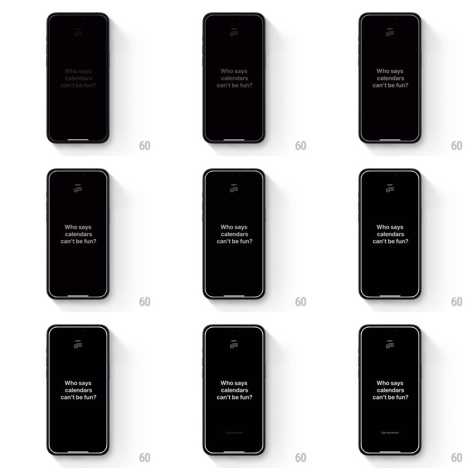

Media
Frame-by-frame

Rebuild this interaction 1:1: Vantage's splash - on a near-black screen, a tiny calendar-grid logo fades in at top, then "Who says calendars can't be fun?" fades in line by line, and a faint "Tap anywhere" prompt settles at the bottom.

Rebuild this interaction 1:1: Vantage's splash - on a near-black screen, a tiny calendar-grid logo fades in at top, then "Who says calendars can't be fun?" fades in line by line, and a faint "Tap anywhere" prompt settles at the bottom.
## Integration
Integration: stack-agnostic spec - springs given as stiffness/damping, timed motions as duration + curve; map every value to your framework and animation library of choice.
## Scene
Black screen. Top-center: a small white grid-of-squares calendar glyph. Center: three stacked lines of light-gray type ("Who says / calendars / can't be fun?"). Bottom-center: a dim "Tap anywhere" caption.
## Motion spec
Pattern: staggered minimalist fade-in.
- The logo fades in first (400ms, from pure black) with a tiny scale settle (0.96 -> 1, 300ms).
- 200ms later the copy fades in line by line (each 350ms, 150ms apart, each line rising 6px as it arrives) - the joke lands one line at a time.
- 600ms after the last line, "Tap anywhere" fades in at the bottom and idles with a slow opacity breathe (0.4 -> 0.8, 2s sine).
- Tap: everything crossfades to the first app screen (300ms); no whoosh, no spin - the minimalism holds to the last frame.
## Calibration
- Total to interactive ~2.7s; every element earns its beat - no overlapping fades.
- Type is light-gray on black, never pure white - soft contrast is the brand.
## Reduced motion
All elements fade in together over 300ms.
## Don't miss
- The restraint is the design - three fades and a prompt, nothing more.
- The breathing prompt is the only loop - it carries "waiting for you" alone.